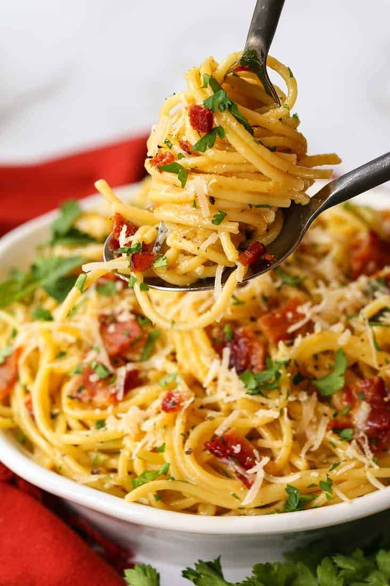

Carbonara

Description
This is a really easy carbonara recipe.
Ingredients
- salt
- 2 large eggs and 2 large yolks, room temperature
- 1 ounce (about ⅓ packed cup) grated pecorino Romano, plus additional for serving
- 1 ounce (about ⅓ packed cup) grated Parmesan
- Coarsely ground black pepper
- 1 tablespoon olive oil
- 3½ ounces of slab guanciale (see recipe), pancetta or bacon, sliced into pieces about ¼ inch thick by ⅓ inch square
- 12 ounces spaghetti (about ¾ box)
Steps
- Heat a large skillet over medium heat and add the butter.
- Once the butter is melted, add the onion and garlic and sauté until the onion is soft and translucent.
- Add the lemon juice, thyme and salt and pepper.
- Add the wine and stir as the wine reduces (cook for about 5 minutes until the wine reduces).
- Turn the heat to medium-low and add the rice. Toss the rice in the onion mixture until it's coated and move it around the pan for about 1 minute.
- Stir in the mushrooms.
- Add the hot chicken stock (or vegetable stock) about 1/2 cup at a time, stirring constantly and waiting until the stock is absorbed by the rice until you add another 1/2 cup.
- Repeat the process above until all the stock has been added and absorbed by the rice and a creamy sauce has formed, stirring constantly throughout.
- Serve immediately with shaved Parmesan cheese and freshly chopped thyme or parsley.